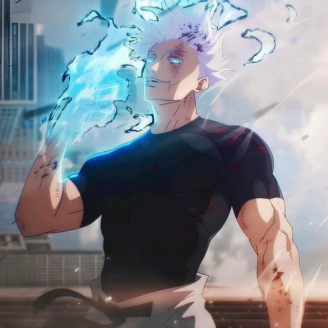

Gojo's Technique
Lapse Blue
Blue is a technique where space is infinitely converged into a single point, creating a void-like effect. It acts almost like a black hole, pulling everything towards it.
Reversal Red
Red is the opposite of blue: it repells objects from it by using Reversed Cursed Energy.
Hollow Purple
Purple is Gojo's ultimate technique. It combines the power of blue and red, creating a devastating effect that can destroy anything in its path.
